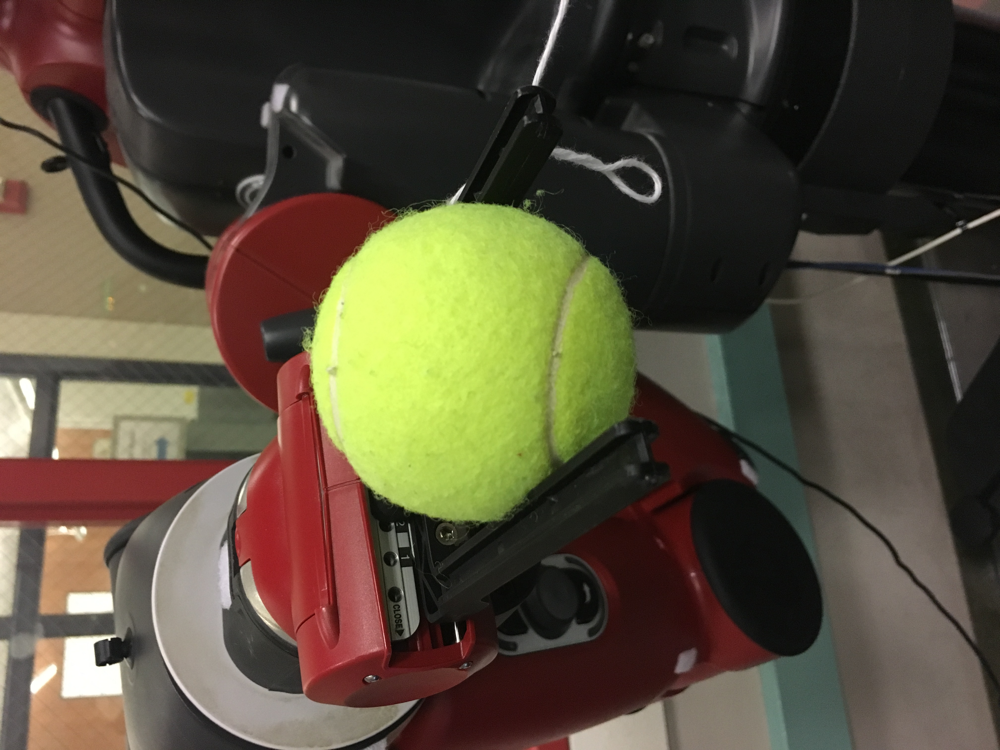

Implementation
The design has been described above. Now we will discuss how we actually went about implementing each of these sections. Additionally we include a description of how the software for this program was written and how each of the individual components/ROS nodes actually fit togehter.
Infrastructure
For our pendulum, we considered several mor complicated designs for the creation of a pendulum. We ultimately found that using a mic stand worked well enough for what we needed for this project. If we were to extend this project a good next step would be to build a more precise rig that would allow for smoother more reliable motion. Our makeshift pendulum stand is pictured below.
Our gripper is rather primitive, but is a proof of concept for what could be used in the future if we were to continue working on this project. For the intents and purposes of our project this was sufficient for us to use to help us achieve our other goals. In the future it would be nice to have a more acutated gripper which would allow for the gripper to be opened wider and closed tigher. The gripper attachement is needed as can be seen below. Without the attachment the ball can barely be grasped by the gripper and catching the ball would have been nearly impossible. Pictured below is the gripper before and after the addition of our attachment. The overall design just involves two larger plates which are attached directly to the original gripper attachments.
Vision
The main goal of this part of the project is to be able to determine the location of the ball with respect to the kinect camera frame. The first part of this involved the calculation of where the ball is in the x-y plane of the image. Before dealing with a live image, we first decided to solve the simpler problem of identifying the location of a ball in a static image. After we had master this simpler problem we proceded onto the main algorithm which will compute the coordinates of the ball in the kinect frame solely from the data generated by the kinect. The pseudoocode of our complete vision processing algorithm is as follows.
- On the first image that is received we allow for the user to select four points which will be used to define the area of the image in which the vision algorithm should look for the ball. This is done once on initialization and assumed to be correct for the remainder of the execution of the program.
- Once the bounding box has been calibrated we will do the following on each image frame received.
- Convert the image data from the image message into a cv image so that it can be modified using OpenCV.
- Next we blur the image using a gaussian blur. This step is done to reduce the effects of noise.
- We then create a mask of the image through color thresholding. If pixels are within the correct range of colors (as was calculated experimentally) we set the value of that pixel to be true, otherwise the pixels are false. This should generate an image that shows the shapes of objects that are the color of a tennis ball.
- Using OpenCV, we then find a list of all of the contours in the masked image.
- After we have the list of all of the contours calculated, we then find the largest contour (as determined by the contour area). This is assumed to be a contour which corresponds to the ball in the frame.
- Next from the largest contour we find the moments of the contour. If the contour's radius meets the criteria of the minimum radius, we assume that this is indeed the location of the ball in the 2D image. This already has encoded the center point of the contour, which we will assume from this point on to be the current center of the ball.
- The next step will be the calculation of the depth of the ball from the kinect. This is handled through the
getDepthfunction whose behavior is described in the following steps. - Because of issues we encountered with calculating the location of the ball in the frame as well as the fact that there is not a one to one correspondence of the pixels of the RGB kinect camera and the kinect's depth sensor, we had to look for an approximate solution of the (x, y, z) location of the ball with respect to the kinect's frame.
- We iterate over 500 samples of a normal distribution of points around the calculated ball's 2D position. We then find the minumum distance away from the kinect frame using the point cloud. We assume that the minimum distance is the true distance, as there will be nothing obstructing the ball. Before doing this the algorithm would often mis-identify the depth as something much larger, using the depth values from behind the ball.
- From here we have calculated the (x, y, d) position of the ball with respect to the kinect frame which will then be returned.
Modeling
Now that vision lets us find the position of the ball at any moment, we can model the trajectory of the pendulum. What we did in order to achieve this was as follows.
We use the three-dimensional equations to model our pendulum oscillatory motion below. (For further details on the derivation, refer to the additional information). Below is an example modelled trajectory of a path given parameters. The blue dot is the pivot, and the grey line the possible trajectory it could take given a starting position marked by the translucent dot.
It is important to note that our equation makes some simplifying assumptions. As we observe the dynamics of phi and theta (where phi and theta are in the diagram marked below), we notice how theta is the only changing angle. Because of our model, we only assume that theta is the changing parameter. phi remains constant. We do not account for damping in the value of theta because our robot aims to catch the pendulum before a full oscillation, making the effect of air resistance negligible, especially given our closeness threshold feedback system that helps minimize errors caused in the planning.
Planning and Execution
With the aforementioned modelling in play, all that is needed left is executing the plan of motion. An important aspect of this planning is the orientation of the gripper, since we need to be able to catch the ball. To get the correct correct orientation of the gripper, we needed to get the frame of the right_hand with respect to the body frame. To do this, because we knew we wanted the gripper to be facing down, we knew the z axis (with respect to the gripper) would be facing the floor, the x axis would be along the projection the pendulum follows along the base's xy's plane, and the y axis would be orthogonal to that projection. We calculated this rotation matrix and converted it to a quaternion which would give the orientation for the pose.

Software Description
The overall structure of the project can be described in the below flow chart. Below we describe in more detail the launch files we used, the topics we are publishing/subscribing to, and the ROS nodes which are present.
Topics
camera/rgb/image_raw- This topic is created by the kinect and represents the RGB readouts from the kinect camera. This is the image that we will run computer vision on.camera/rgb/camera_info- This topic is also created by the kinect and represents some camera metadata including the size of the image we are looking at.camera/depth/points- This is the last topic created by the kinect that we are using. This represents the depth pointcloud created by the kinect which we ultimately use to calculate the third coordinate in the kinect frame.kinect/ball/location- This is a topic created by our code which represents that current location of the ball in coordinates with respect to the kinect frame.base/ball/location- This is a topic created by our code which represents that current location of the ball in coordinates with respect to the base frame of the robot.ball/goal- This is a topic created by our code which represents the optimal location we have found at which the catch should be performed. Before the model finishes, this topic publishes no information.ball/ready- This is a topic created by our code which publishes only a boolean value representing if the robot has moved to the pose specified in theball/goaltopic. If true that means the movement has finished and the gripper can close once the ball nears the end effector.robot/xdisplay- This is a topic that we publish to so that we can see the kinect camera image on the screen of the robot.
ROS Nodes
kinect_util- This is our own program. The high level function of this node is to parse the information output by the kinect and turn this into the information published to thekinect/ball/locationtopic. The complete process for how this program works is described above in more detail in the section on vision.to_world_frame- This is our own program which subscribes tokinect/ball/locationand outputs the transformed coordinates in the base frame as the topicbase/ball/location.model- This too is a program written by us which handles the parameter estimation and modelling of the pendulum. The specific details of how this program works are described above in the model section. At a high level this node subscribes tobase/ball/locationand then published the optimal catch position to the topicball/goalmove_to_goal- This is our program which handles the path planning and execution of the path. This node subscribes toball/goalin order to see where the end effector should move. It then publishes toball/readywhen the movement has been completed and the end effector is in the desired position.gripper- This is the node that we wrote to control the gripper. In order to do this this node subscribes tobase/ball/locationandball/readyto determine when the gripper is ready to be closed and when the ball is near enough to be closed such that the catch can be made. Once both of these are satisfied, the gripper will close with the ball in its grasp.robot_state_publisher- This is a node which is used for the visualization fo the robot in RViz and is also used to determine the joint state of the robot. This relies on the URDF file of the robot (baxter_description /urdf/baxter.urdf).joint_state_publisher- This is a node very similar torobot_state_publisherwhich is used for the visualization of the robot in RViz and is also used to determine the joint state of the robot. This relies on the URDF file of the robot (baxter_description /urdf/baxter.urdf).trajectory_server- This is a part of the baxter interface which is used to actually perform the actuation of the robot.display_to_kinect_transformer- This is a node which publishes the static transform form head_camera to camera_link (this is the frame of the kinect).
Launch Files
baxter_imaging pendulum.launch- This is the primary launch file that we use to bring up all all of the nodes listed above. This additionally causes the other two below launch files to be run.freenect_launch freenect.launch- This launch file will bring up the kinect and the topics related to the kinectbaxter_moveit_config demo_baxter.launch- This launch file allows us to give MoveIt commands as well as see and control Baxter in RVIZ